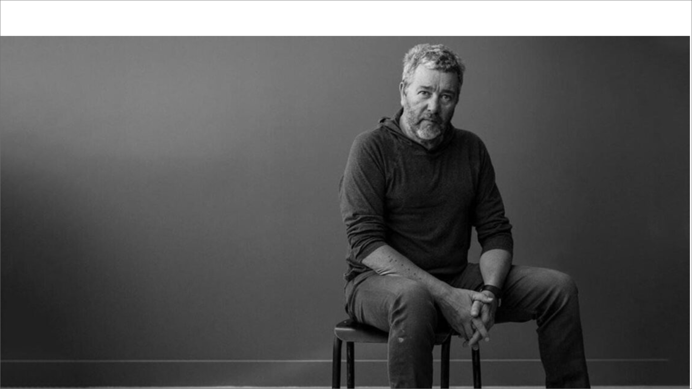
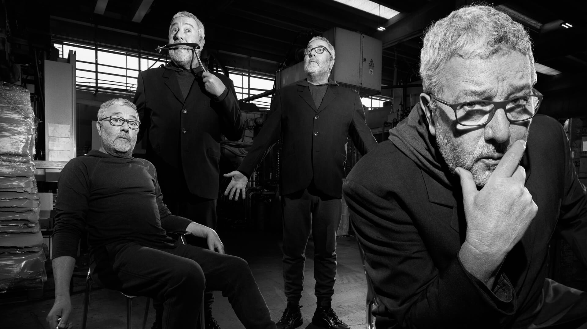

그의 디자인은 “스타일”뿐만 아니라 철저한 “기능적 요구”와 그 중심에 있는 사람과 환경에 관심을 두고 있으며, 그것은 필립스탁 자신이 말하는 디자인 철학에서도 확실히 알 수 있습니다.
“스타일이 아닌 기능(function)이야말로 오랫동안 사랑받는 디자인의 핵심이자 비결이에요. 번드레한 겉모습만 치중하는 것이 아니라 사람들이 사용하거나 머물 때 얼마나 편리할까, 혹은 어떻게 해야 이 물건을 사용하면서 즐거움과 행복을 느낄 수 있을까를 먼저 생각하는 것이 좋은 디자인의 원천입니다”
주방 용기를 예술로 승화시켰다는 평을 듣고 있는 이탈리아 알레시(Alessi)의 감귤류 과즙기 ‘주시 살리프’(Juicy Salif)는 기발한 디자인으로 전 세계 사람들에게 깊은 인상을 남긴 제품입니다. ‘주시 살리프’를 처음 본 사람들은 대게 ‘저게 뭐하는 물건인가?’ 내지는 ‘장식품인가보다’라는 반응을 보이곤 했다지요. 그러나 디자인의 측면에서 최고의 작품으로 평가되고 있는 주시 살리프는 ‘기발한 형태’를 하고 있으면서 동시에 어느 과즙기보다 ‘뛰어난 기능’을 구현하고 있습니다. 오렌지나 레몬을 반으로 잘라 위에 놓고 누르면서 돌려주면 과즙이 흘러내리며 밑의 뾰족한 꼭지에서 아래로 떨어지며, 과즙기를 쓰고 난 후에는 물로 한번 씻어주면 되기 때문에 사용하기 편리하기까지 합니다.

“나는 부자를 위해 2억달러짜리 요트도 디자인하지만, 가난한 사람도 살 수 있는 2달러짜리 우유병도 디자인한다. 돈이 많고 적음에 구애받지 않고, 그 제품을 사용할 사람에 대해 존경심과 사랑을 갖고 디자인 한다.”
주방 용기를 예술로 승화시켰다는 평을 듣고 있는 이탈리아 알레시(Alessi)의 감귤류 과즙기 ‘주시 살리프’(Juicy Salif)는 기발한 디자인으로 전 세계 사람들에게 깊은 인상을 남긴 제품입니다. ‘주시 살리프’를 처음 본 사람들은 대게 ‘저게 뭐하는 물건인가?’ 내지는 ‘장식품인가보다’라는 반응을 보이곤 했다지요. 그러나 디자인의 측면에서 최고의 작품으로 평가되고 있는 주시 살리프는 ‘기발한 형태’를 하고 있으면서 동시에 어느 과즙기보다 ‘뛰어난 기능’을 구현하고 있습니다. 오렌지나 레몬을 반으로 잘라 위에 놓고 누르면서 돌려주면 과즙이 흘러내리며 밑의 뾰족한 꼭지에서 아래로 떨어지며, 과즙기를 쓰고 난 후에는 물로 한번 씻어주면 되기 때문에 사용하기 편리하기까지 합니다.